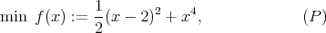
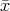
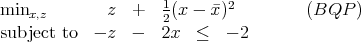
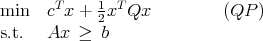
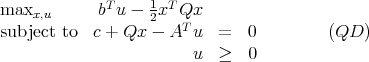
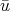
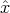
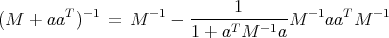

Name:
Please do all three problems. You must show all work to obtain full credit. Results from class or
the text may be used if properly stated. No books or calculators allowed. The exam lasts one hour
and 50 minutes.
- (40 points; each part is worth 10 points.) Consider the unconstrained problem

where x IR. We are going to investigate a bundle method for solving this problem. Let
 = 0 be the current point. A bundle subproblem for (P) is

where z and x are variable scalars.
- Show that the optimal solution to the bundle subproblem (BQP) is to take x = 2.
- Show that the objective function value for x = 2 predicted by the bundle
subproblem is noticeably less than the actual value f(2).
- What is the valid subgradient inequality generated at the point x = 2? Show
that the inequality is violated by the solution to (BQP).
- Add the constraint found in part 1c to (BQP) and find the new optimal solution,
assuming a null step was taken so we still have = 0.
- (40 points.) Consider the quadratic programming problem

where x and c are n-vectors, Q is symmetric and positive semidefinite, b is an m-vector, and
A is m × n.
- (20 points) Show that the Lagrangian dual of (QP) can be written

- (10 points) Let ,  be a feasible solution to (QD). Assume there exists an n-vector dx
with dxT Qd
x = 0. Show that Qdx = 0. Assume there also exists a nonnegative m-vector
du with bT d
u > 0 and AT d
u = 0. What does this imply about (QD) and about
(QP)?
- (10 points) Assume there exists a vector d satisfying cT d < 0, dT Qd = 0, and Ad ≥ 0.
What does this imply about (QD)? Assume further that there exists an 
satisfying A > b. What does your result about (QD) then imply about
(QP)?
- (20 points; each part is worth 10 points.) The function f : IRn → IR is convex and
the function ϕ : IR → IR is convex and monotonically strictly increasing. Define
g(x) := ϕ(f(x)), so g : IRn → IR. The problems of minimizing f(x) and of minimizing g(x)
are equivalent, with the same optimal points. Assume f, g, and ϕ are all smooth
functions.
- How do the steepest descent directions for f(x) and g(x) compare?
- How do the Newton directions for f(x) and g(x) compare? (Hint: If M is an invertible
n × n matrix and a is an n-vector, then

provided 1 + aT M-1a≠0.)